瀬戸内海に浮かぶ生口島にナイスなフェイク寺がある。 その名を耕三寺といい､付いたあだ名が「西の東照宮」。
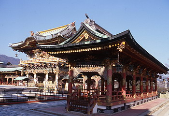 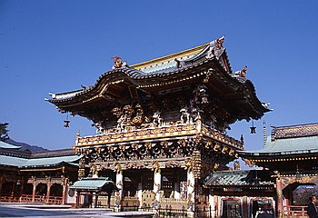
名前でわかるとおり､門が日光東照宮の陽明門とまったく同じ造りなのだ。
文部省に保管されている図面を基にして造られているそうだ。なんでもこの寺の創始者､鉄鋼事業で財を成したこのお方､母堂が生前､日光に行けなかったのを悔いてコレを造ったとか。
ちなみにこの門の名前は「孝養の門」。 昭和29年から10年の歳月をかけて造られた力作だ。
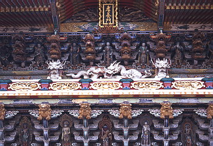
構造､から彩色に至るまで全てが本物の陽明門にそっくり。
ただし、良く見ると細部が微妙に違う。陽明門自体がハデハデ建築なのでちょっと分かりにくいのだが、なにやら中国のお寺っぽい。
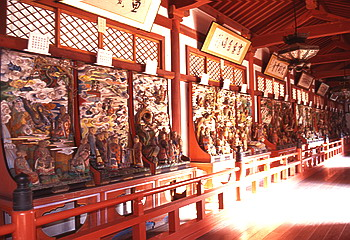 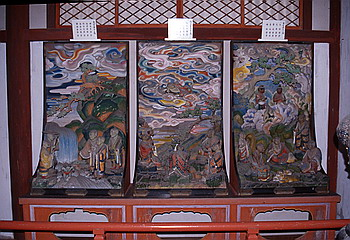
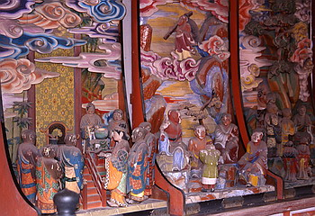
で、気を取り直して他の建物を見てみる。ここの建物はすべて日本の名建築とうたわれたもののフェイクなのだ。
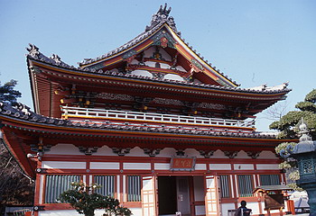 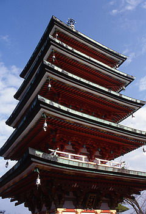
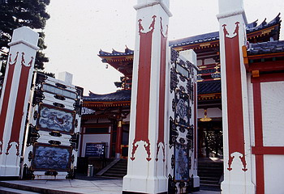
京都御所紫宸殿を真似た門。
大和法隆寺の桜門と同じ中門。 宇治の平等院凰鳳堂を真似た本堂。この辺になってくると、もうフェイクというより、完全に別のモノと化している。
形状、規模はまあ、同じなのだろうが、細部の装飾や全体の色彩が本家とまったく違うのだ。
例えば御所紫宸殿を真似た門。本家は白木造りなのに対して、ここのはコッテコテの赤ペイント＆彫刻。中門、本堂も然り。
日本の名建築の上にたっぷりと チャイナテイストの味付けをした奇妙な建物が延々と並ぶ寺であったのだ。
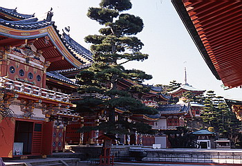
これだけ日本の名建築が並ぶと､建てているほうもゲッソリしてしまいそうなものだが､まあ､ひとつつくればまたひとつ欲しくなる､というのは万人共通のコレクター心理か。スケールでかいけど。
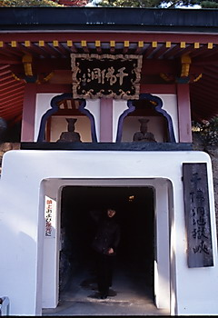 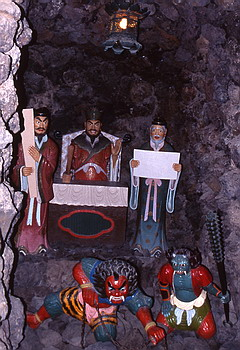
そして隠れメインスポットとしてあるのが、千仏洞地獄峡。地下15・に長さ350・というスケールの人工洞窟だ。
富士、浅間山の溶岩をあしらった壁面が続くこのトンネル、はじめは地獄見学コースで、お約束の閻魔さまのハリボテや八大地獄の絵などが展示してある平らな道なのだが、進むに従って、立体迷宮の様相を呈してくる。
そこはどうやら極楽ゾーンらしく、無数の石像で壁が埋っている。
途中、10ｍ位の高さの洞室が3つあり、それぞれ滝や川などがあり、雰囲気は満点。とくに溶岩で織り成される3段ケーキ状態の棚に仏像が乗る「仏像3段ケーキ」は凄かった。
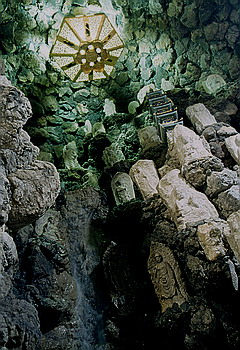 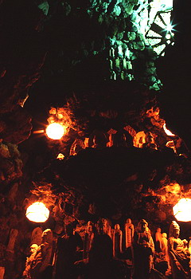
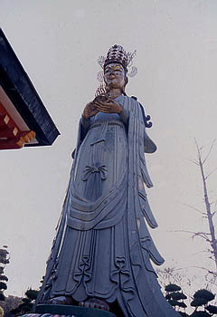
さらに高台から隣の山の山頂を見れば怪しげな巨大彫刻庭園が建設されている（2〜3年後にオープンとの事）。
下手なテーマパークなどは恥じて死ねと言いたくなる位もう見所はてんこ盛り、極上の珍寺である。
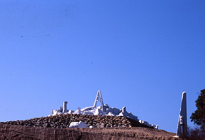
それにしても親のためにここまでやる普請道楽は日本ではまずここの住職しかいないだろう（この住職さんのお話は耕三寺のホームページでこってりとご覧になれますです）。
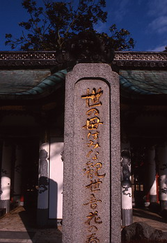
珍寺大道場 HOME